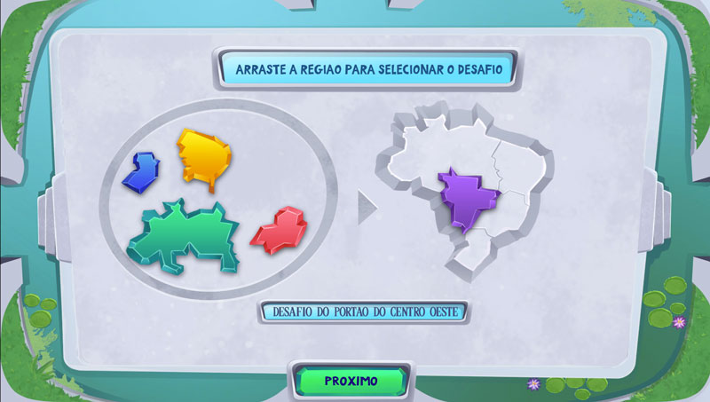

Guardiões do Mundo is a digital card game for ages 9 and up, on the PlayTable, Playmove's interactive table. Characters from Brazilian folklore compete for control of a board by playing Brazilian state cards on squares that represent attributes such as territorial extension, number of municipalities and maximum altitude. I designed its challenge mode: 20 progressively harder quick matches against the AI.
My work on Guardiões do Mundo focused on the challenge mode. The game is still available today.
Guardiões do Mundo is a card game about Brazilian states. Four characters from Brazilian folklore (Saci, Iara, Curupira and Boitatá) compete to control a board by playing state cards. A match works like this:
The core of Guardiões do Mundo turns facts about Brazilian states into decisions. On each play the player chooses a theme, such as economy, and compares the attribute of their state card with the opponent's, under a decider that defines whether the greater or the lesser value wins. Because the attribute and the decider change, the same cards lead to different decisions every time, which keeps matches varied and rewards knowing the content: the player learns about the states by playing with them, not by memorizing them. That is what makes the educational content part of the gameplay and not a separate quiz.
In the challenge mode, the player faces the AI in a quick match with only three cards in hand, and the 20 challenges are organized by the regions of Brazil. Choosing a region gives the mode a clear structure and a sense of progress across the country, while the short format turns each challenge into a small puzzle that can be tried again in a few minutes. That keeps the difficulty curve steady and makes the mode suited to short sessions.

The hardest design decision of the mode was building 20 challenges with a steady difficulty curve. With only three cards in hand, every match became a short problem to solve, so difficulty could be shaped by the cards the player has and by how the AI responds, instead of by the length of the match.
For each challenge to feel like a real opponent, the AI could not follow a fixed script. Its choices depend on what has been played on the board, through a combination of rules that decides which card to use and where. The rules were adjusted to how a player could react, so that each challenge asked for a different decision.
The main game is a match of several turns, and the challenge mode needed a shorter version with its own goal. Limiting the hand to three cards compressed the decisions of a whole match into a few plays, while keeping the rules the player already knows.
The game was very well received in schools, since it covers a subject of the school curriculum that the platform did not yet address, and also for the versatility of its game modes. It remains available on the PlayTable today.
In this mode, every challenge was designed to be harder than the last, and to be answered by an opponent that reads the board.